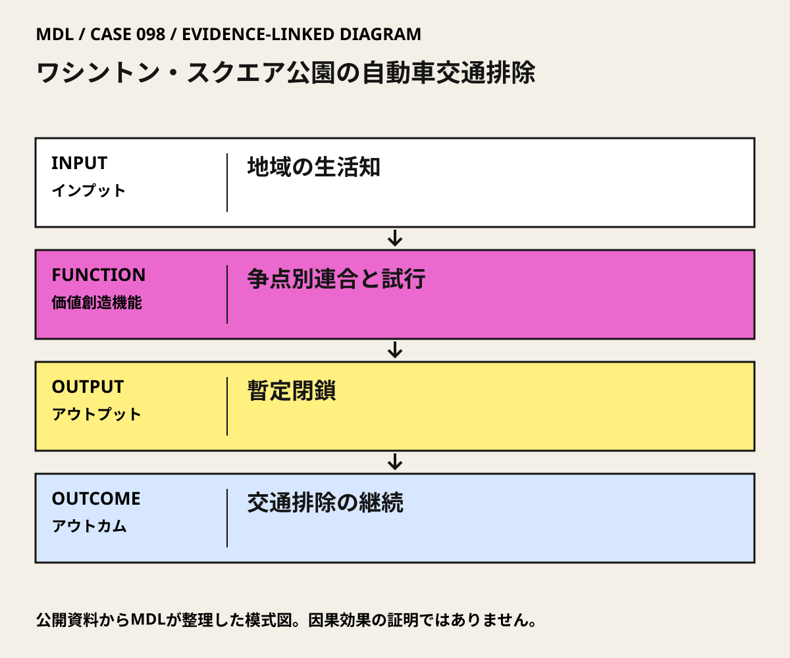

I / INPUT
何を持ち込んでいるか。
活動の出発点となる資源と課題を分けて整理します。「自社」は、その場・制度を運営する組織を指します。
II / VALUE CREATION FUNCTIONS
資源を、どう価値へ変えるか。
以下は既存の8ステップへの編集上の対応づけです。各取り組みの公式な工程名や、全工程を自前で担うことを意味しません。
III / OUTPUT
直接、何が生まれたか。
試作品、データ、契約、標準、育成した人材など、活動から直接生まれたもの。
交通を閉じる暫定措置と、市民連合の活動記録。
IV / OUTCOME
その結果、何が変わったか。
実際の利用、行動、業務、事業、地域の変化。報告された変化と、当該活動に帰属できる効果は区別します。
PROJECT IN FOCUS / 具体的な事例
ワシントン・スクエア公園の自動車交通排除
確認できた段階：市民連合による交通計画への働きかけ・暫定閉鎖 調査確認日 2026-10-06
誰の課題を、どう扱ったか
確認できた変化
公園の自動車交通排除が実現。Hayes史料の解説は1959年の達成を記す。
評価の限界：市民連合の成功を一人の功績に還元しない。閉鎖後の現在の公園設計、周辺不動産価値、居住継続は別の成果であり、この運動による因果効果を示していない。
DESIGN BACKWARDS FROM IMPLEMENTATION
社会実装から逆算して、
何を先に整えているか。
実証の先にある導入・運用・継続から、この事例の設計を読み解きます。原典で確認できる仕組みと、MDLの設計解釈・他地域へ応用するための提案を区別して読んでください。「提案」「未実施」と記す内容は、当地で実施済みの工夫ではありません。仕組みの存在と、全案件で成果が出たことも別に扱います。
MORE DETAIL / 運営・根拠・応用
運営の全体像と、学びを深める資料。
費用負担、公表値、応用条件、写真・動画、原典を続けて確認できます。
01どう動かしているのか。
政党や団体の全方針を一致させるのではなく、公園の交通排除という争点に協力を集中。恒久案への賛否だけでなく、暫定閉鎖で周辺交通への懸念を確かめる経路をつくった。
意思決定と本人の関与：住民側が目標を共有し、市に閉鎖を求めた。市民連合の支持と行政の決定権は別で、ジェイコブズ個人が交通規制を決定したわけではない。 Jane Jacobsは地域運動への参加・組織づくりに関与。Ray Rubinow、Shirley Hayes、Edith Lyonsらの役割と区別する。
- 共有できる争点を定める
- 行政への要求を具体化する
- 暫定閉鎖から継続へ進む
02誰が負担し、誰が担うか。
市民運動の費用、暫定閉鎖の工事費と負担割合は未確認。資料目録に財務記録はあるが、本文・金額を取得していない。
制度やプログラムの財源と、各参加企業・地域に発生する費用は同じではありません。公開範囲を超える案件別予算・契約条件は未確認です。
03確認できたこと。
交通を閉じる暫定措置と、市民連合の活動記録。
読み取れる範囲：市民連合の成功を一人の功績に還元しない。閉鎖後の現在の公園設計、周辺不動産価値、居住継続は別の成果であり、この運動による因果効果を示していない。
原典で確かめる ↗ 出典の説明 ↓04日本で活かすなら。
地域の課題を一つの判断可能な争点に絞り、誰が決めるかと試行条件を明確にする。対立の動員だけで終わらず、閉鎖しない代替案も同じ指標で比べる。
05そのまま真似できないこと。
市民連合の成功を一人の功績に還元しない。閉鎖後の現在の公園設計、周辺不動産価値、居住継続は別の成果であり、この運動による因果効果を示していない。
06次に、何を確かめるか。
提案・未実施：提案・未実施：地域の一街路で、交通を維持する案・時間限定規制・小規模な全面規制を比較し、許可後に短期試行する。
担い手：道路管理者を決定責任者、住民・商店の連絡会を調整担当とする。
測るもの：通過交通、滞在、配送・緊急アクセス、参加できなかった人の負担を同じ時間帯で測る。
継続：安全とアクセスを保ち、利用改善が続く。
修正：配送や隣接街路へ負担が偏るなら時間・区間を変更。
停止：緊急アクセスを確保できない、または重大な安全問題が生じる。
07写真・図と原資料で確かめる。
現場の写真を見る ↑
DIAGRAM: モビリティデザインラボ · 根拠資料 ↗
図の説明
公開資料に基づく模式図。地域の生活知 → 争点別連合と試行 → 暫定閉鎖 → 交通排除の継続。実景や地理的配置を示さない。
2026-10-06 · MDL作成の説明図。第三者の写真・図面の複製ではありません。
冒頭写真：凱旋門を背景に噴水周辺へ集まる大勢の人々
原資料で、当時の調査・実践を読む ↗08原典を読む。
Jane Jacobs: An Oral History Interview ↗
連合形成、暫定閉鎖、他の活動家の役割、交通変化の本人証言
本人インタビューの全文PDF公開・英語。回顧証言。2026-10-06確認。
Guide to the Shirley Hayes Papers ↗
Hayesらの運動、1959年の交通閉鎖、所蔵史料の範囲
史料目録・解説公開。収蔵原資料の全文公開ではない。2026-10-06確認。